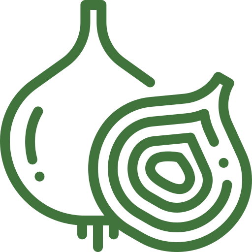

<ion-toolbar id="header">
  <div class="toolbar-container">
    <ion-icon name="arrow-back-outline" (click)="goToInformations()"></ion-icon>
    <ion-title>MES COMMANDES</ion-title>
  </div>
</ion-toolbar>

<ion-content>
  
  <h2>VOUS N’AVEZ ACTUELLEMENT AUCUNE COMMANDE</h2>
  <p>C’est pas comme ça que ça va pousser…</p>
  <button class="cta" (click)="goToGraine()">CREER MON COMPTE</button>
</ion-content>
